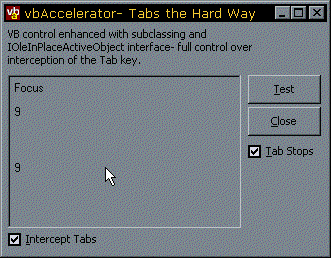

TabCatch Sample Code (22K)
TabCatch Sample Code (22K)
 20 Feb 1999
20 Feb 1999
First Posted
 VB Type Library Registration Utility
VB Type Library Registration Utility
 Subclassing Without The Crashes
Subclassing Without The Crashes
 Owner Draw Combo and List Boxes Version 2.1
Owner Draw Combo and List Boxes Version 2.1
 Ole Guid and interface definitions (OleGuids.Tlb)
Ole Guid and interface definitions (OleGuids.Tlb)
 Dealing with Circular References
Dealing with Circular References

How to Trap the Tab Key in a UserControl with IOLEInPlaceActiveObject
Right. You are trying to create a control in VB, and your control has to catch the Tab key. It might be a grid, where you would expect tab to move between cells, or it might be an editor control. This is not an unreasonable request of any programming language which lets you create a control. Or is it? Want to go mad? You will if you try to intercept Tabs properly in VB unless someone tells you the answer...
This article is here to show you a brilliant technique but also may help you interpret Bruce McKinney's assertion that "VB makes the easy things easy, but the hard things harder".
The code provided here is based on code and a Type Library put together by Matt Curland, Bill Storage and Mike Gainer.
Tabs And Stuff
There are two ways to look at the tab key problem. Firstly, if you're working in VB you can set TabStop to False for all controls on the form. Then, theoretically all controls intercept the Tab key. I personally find the TabStop property to work somewhere between dubious and ineffective. No matter. Having set TabStop to false, you're then on your own about Tab processing. If a control intercepts the tab key, its really up to you what you do. People have been acclaimed as masters of Visual Basic for coding large forms which are in control of tabs without using the TabStop property. However, there is a fundamental encapsulation problem here. When you want to intercept the Tab key on one control, you have the large scale issue of coding Tab handling for all other controls on the form. You can't just write the code into the only control which requires the Tab.
Don't Even Go There
That's just trying to code a VB only control which intercepts tabs. A much more difficult problem occurs if you're trying to do something out of the ordinary, such as intercept keys in a window you have created using the Windows API. This was my problem for over a year on the Owner-Draw Combo and List Box Control. VB firmly refuses to acknowledge an API window as something which can partake in the tab order unless you can somehow tell it that's what you want to do. (You can check out some more examples of this occuring in some of the other free controls distributed on the internet for VB which create a Win32 control using CreateWindowEx.) Forms appear to have control windows integrated but as soon as you press Tab, nothing happens.
Toughest Kid in the Infants
The issue of trapping tabs in controls is one that is is designed into the ActiveX control specification. The problem you have in VB with this is that there is no obvious way of getting at this functionality. All ActiveX controls must implement the IOleInPlaceActiveObject interface which covers a variety of interfacing issues between the control and its parent, including control activation, context sensitive help, drawing resize borders and responding to accelerator keys (including the Tab key). The implementation of this interface is preset and buried within a VB control. With some hacking, you can override the preset implementation, however.
The first thing you need to do this is a Type Library (TLB) which interfaces VB to the COM interface. This TLB is only required when working in the VB IDE, and tells VB where the calls to be made are located within the OLE DLLs. When you compile a sample using a Type Library, VB compiles in the references to the calls and you no longer require the TLB file. The Type Library for this sample is available from the Type Library OleGuids.Tlb page. Unzip the file to a suitable directory and register it either by:
- Using VB
Choose Project-References then click Browse and pick the file - Using the VB TLB Registration Utility
Sometimes VB's TLB registration function goes wrong, particularly with multiple versions of TLB files. A solution to this problem is to use the VB TLB registration utility.
Once the library is in place, you need to be able to intercept VB's existing implementation of IOLEInPlaceActiveObject and replace it with a customised one. As we are only interested here in intercepting Tabs at run-time, the only time you need to modify the interface is when the control gets focus. To do this, the code subclasses the WM_SETFOCUS message for the control, allowing VB to process it first. Once VB is done with it, the code then uses various arcane hacks to modify the vtable of the UserControl object, replacing the existing IOLEInPlaceActiveObject interface pointers with a new set pointing to VB functions implemented in a module, mIOLEInPlaceActiveObject.Bas. As a consequence, TranslateAccelerator calls are routed to the version in your code. It is then a simple matter to return the COM code S_OK after getting the Tab key, thus informing the ActiveX interface that the key is wanted in the control. The mIOLEInPlaceActiveObject module has to communicate TranslateAccelerator events with the control. To achieve this without setting up a circular reference between the control and the module (which would prevent the control from ever terminating), un-referenced object pointers are used. These are set up during the UserControl_Initialize event and cleared at UserControl_Terminate. Check out Dealing with Circular References for more information about using object pointers to prevent circular references.
The code to implement this is mad. If you want to do it, you'll just want to copy code from another project into your own (you're not going to remember how to do it every time!). For this reason the download TabCatch project provides a bare-bones template for implementing Tab interception in controls.
J'Accuse
This doesn't seem reasonable. I've been visiting MSDN over the last month to look at the OLE interfaces which have to be implemented between ActiveX controls and their container (such as VB, IE, Word etc). The more I read about it the more I think that VB's designers left out too many interfaces. VB's job is to make things easier, but how difficult would it have been to add a TranslateAccelerator implementation? Does it have to impossible to access the other OLE interfaces such as the one which controls run-time size of your control, the one which controls whether you can negotiate space in the non-client area of the parent and so on? These are COM interfaces after all, so why are we stuck with a narrow preset implementation unless you make hacks like described here?
Deal With It
In any case, I guess we're stuck with the way VB is. .NET makes life a bit easier as you get a much more detailed framework to play with. But using the code presented here you have a means of creating properly responsive UserControls, particularly ones which use the Windows API to create new controls.